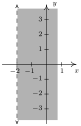
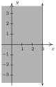
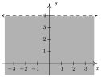
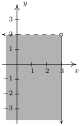
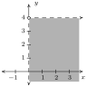
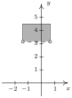
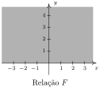
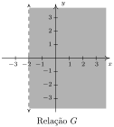
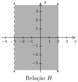
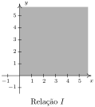

Fundamentos: Relações e Funções
2 Relações
Resumo do capítulo
Uma relação é simplesmente um conjunto de pares ordenados. Este capítulo trata da leitura de relações a partir de conjuntos, gráficos e equações, extraindo delas o domínio e a imagem, testando simetria em relação aos eixos e à origem, e encontrando as interseções do gráfico com os eixos coordenados.
Nos exercícios 1 - 20, esboce o gráfico da relação dada.
- $~$
- \{$(-2, 0)$, $\;(-1, 1)$, $\;(-1, -1)$, $\;(0, 2)$, $\;(0, -2)$, $\;(1, 3)$, $\;(1, -3)\}$resposta$~$
- $\left\{ \left(m, 2m \right) \, | \, n = 0, \pm 1, \pm 2 \right\}$resposta$~$
- $\left\{ \left(\frac{6}{k}, k \right) \, | \, k = \pm 1, \pm 2, \pm 3, \pm 4, \pm 5, \pm 6 \right\}$resposta$~$
- $\left\{ \left(n, 4 - n^2\right) \, | \, n = 0, \pm 1, \pm 2 \right\}$resposta$~$
- $\left\{ \left(\sqrt{j}, j \right) \, | \, j = 0, 1, 4, 9 \right\}$resposta$~$
- $\left\{ \left(x, -2 \right) \, | \, x > -4 \right\}$resposta$~$
- $\left\{ \left(x, 3 \right) \, | \, x \leq 4 \right\}$resposta$~$
- $\left\{ \left(-1, y \right) \, | \, y > 1 \right\}$resposta$~$
- $\left\{ \left(2, y \right) \, | \, y \leq 5 \right\}$resposta$~$
- $\{ (-2, y) \, | \, -3 < y \leq 4\}$resposta$~$
- $\left\{ \left(3,y \right) \, | \, -4 \leq y < 3 \right\}$resposta$~$
- $\{ (x, 2) \, | \, -2 \leq x < 3 \}$resposta$~$
- $\left\{ \left(x,-3 \right) \, | \, -4 < x \leq 4 \right\}$resposta$~$
- $\{ (x, y) \, | \, x > -2 \}$resposta$~$

- $\left\{ \left(x,y \right) \, | \, x \leq 3 \right\}$resposta$~$

- $\left\{ \left(x,y \right) \, | \, y < 4 \right\}$resposta$~$

- $\left\{ \left(x,y \right) \, | \, x \leq 3, \, y < 2 \right\}$resposta$~$

- $\left\{ \left(x,y \right) \, | \, x > 0, \, y < 4 \right\}$resposta$~$

- $~$

Nos exercícios 21 - 30, descreva a relação dada por enumeração ou por compreensão.
- $A = \{(-4, -1), (-2, 1), (0, 3), (1, 4)\}$
- $~$resposta$B = \left\{ \left(x,3 \right) \, | \, x \geq -3 \right\}$
- $~$resposta$C = \{ \left(2,y) \, | \, y > -3 \right\}$
- $~$resposta$D = \{ \left(-2,y) \, | \, -4 \leq y < 3 \right\}$
- $~$resposta$E = \left\{ \left(x,2 \right) \, | \, -4 < x \leq 3 \right\}$
- $~$resposta

$F = \{ \left(x,y) \, | \, y \geq 0 \right\}$
- $~$resposta

$G = \left\{ \left(x,y \right) \, | \, x > -2 \right\}$ - $~$resposta

$H = \left\{ \left(x,y \right) \, | \, -3 < x \leq 2 \right\}$
- $~$resposta

$I = \{ \left(x,y) \, | \, x \geq 0, \! y \geq 0\right\}$ - $J = \{(x, y) \, | \, -4 < x < 5, \; -3 < y < 2\}$
Nos exercícios 31 - 36, esboce o gráfico da reta dada.
- $~$
- $x = 3$resposta$~$
- $y = 3$resposta$~$
- $y = -2$resposta$~$
- $x=0$resposta$~$
- $~$
Algumas relações são bem fáceis de descrever em palavras ou por enumeração mas bastante difíceis, se não impossíveis, de se representar graficamente. Discuta com seus colegas como esboçar o gráfico das relações dadas nos exercícios 37 - 40. Note que na notação abaixo estamos usando as reticências, …, para denotar que a lista não termina, mas continua seguindo o padrão estabelecido indefinidamente. Para as relações nos exercícios 37 e 38, dê dois exemplos de pontos que pertencem a relação e dois pontos que não pertencem.
- $\{(1, 0), (2, 1), (4, 2), (8, 3), (16, 4), (32, 5), \ldots \}$